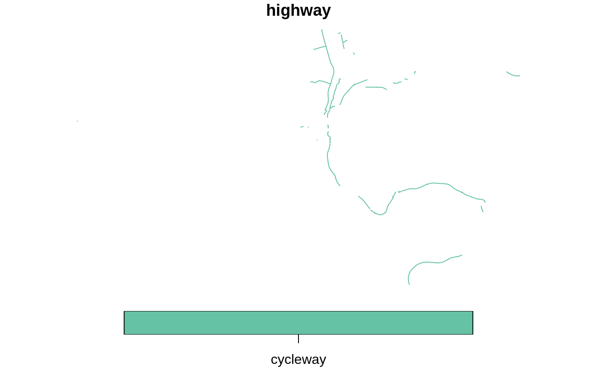

Read pbf files with additional attributes
read_pbf( dsn, layer = "lines", key = NULL, value = NULL, selected_columns = "*", attributes = make_additional_attributes(layer = layer), ini_file = NULL, append = TRUE )
| dsn | The location of the file |
|---|---|
| layer | Which layer to read in? One of "points" "lines" "multipolygons" "multilinestrings" or "other_relations" |
| key | Character string defining the key values to subset the data from, e.g. `"highway"` |
| value | The value(s) the `key` can take, e.g. `"cycleway"` |
| selected_columns | The columns to return in the output |
| attributes | Vector of character strings naming attributes to import |
| ini_file | A modified version of https://github.com/OSGeo/gdal/raw/master/gdal/data/osmconf.ini |
| append | Should the columns named in `attributes` be appended to the default columns? `TRUE` by default. |
# \donttest{ pbf_url = geofabrik_zones$pbf_url[geofabrik_zones$name == "Isle of Wight"] f = file.path(tempdir(), "test.osm.pbf") download.file(pbf_url, f) # testing read_sf sf::st_layers(f)#> Driver: OSM #> Available layers: #> layer_name geometry_type features fields #> 1 points Point NA 10 #> 2 lines Line String NA 9 #> 3 multilinestrings Multi Line String NA 4 #> 4 multipolygons Multi Polygon NA 25 #> 5 other_relations Geometry Collection NA 4#> Warning: automatically selected the first layer in a data source containing more than one.#> Warning: automatically selected the first layer in a data source containing more than one.#> Warning: automatically selected the first layer in a data source containing more than one.res = read_pbf(f, layer = "multipolygons")#>#>#>q = "select * from lines where highway = 'cycleway'" res_cycleways = sf::read_sf(f, layer = "lines", query = q) res_cycleways = read_pbf(f, key = "highway", value = "cycleway") # more concise#>#>#>res = read_pbf(f)#>#>#>names(res)#> [1] "osm_id" "name" "highway" "waterway" #> [5] "aerialway" "barrier" "man_made" "maxspeed" #> [9] "oneway" "building" "surface" "landuse" #> [13] "natural" "start_date" "wall" "service" #> [17] "lanes" "layer" "tracktype" "bridge" #> [21] "foot" "bicycle" "lit" "railway" #> [25] "footway" "z_order" "other_tags" "_ogr_geometry_"res = read_pbf(f, layer = "points")#>#>#>names(res)#> [1] "osm_id" "name" "barrier" "highway" #> [5] "ref" "address" "is_in" "place" #> [9] "man_made" "building" "natural" "surface" #> [13] "source" "power" "amenity" "shop" #> [17] "operator" "other_tags" "_ogr_geometry_"res = read_pbf(f, selected_columns = "highway") # only return highway column#>#>#>names(res)#> [1] "highway" "geometry"res_cycleway = res = read_pbf(f, layer = "lines", key = "highway", value = "cycleway")#>#>#>plot(res_cycleway)#> Warning: plotting the first 10 out of 27 attributes; use max.plot = 27 to plot all# uncomment to get big dataset # f_en = gf_filename("England") # u_en = geofabrik_zones$pbf_url[geofabrik_zones$name == "England"] # download.file(u_en, f_en) # cycleway_en = read_pbf(f_en, layer = "lines", key = "highway", value = "cycleway") # plot(cycleway_en$geometry) # pryr::object_size(cycleway_en) # }